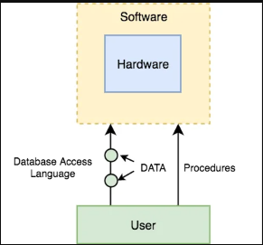
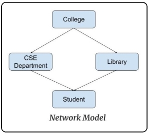
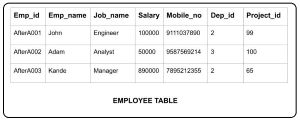
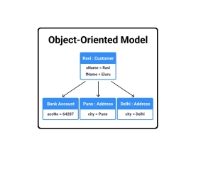

Components of DBMS
Components of DBMS: There are the following components:
Software –
The main component of a Database management system is the software. It is the set of programs which is used to manage the database and to control the overall computerized database.The DBMS software provides an easy-to-use interface to store, retrieve, and update data in the database. software component is capable of understanding the Database Access Language and converts it into actual database commands to execute or run them on the database.
Hardware –
component of DBMS consists of a set of physical electronic devices such as computers, I/O channels, storage devices, etc that create an interface between computers and the users.This DBMS component is used for keeping and storing the data in the database.
Data –
is the most important component of the database management system. main task of DBMS is to process the data. Here, databases are defined, constructed, and then data is stored, retrieved, and updated to and from the databasesThe database contains both the metadata (description about data or data about data) and the actual (or operational) data.
Users –
users are the people who control and manage the databases and perform different types of operations on the databases in the database management system.
Types of DBMS
There are four types of database management system (DBMS) based on the data models, which are as follows:
Hierarchical Databases
Network Databases
Relational Databases
Object-oriented Databases
Hierarchical Databases –
It is one of the oldest database model developed by IBM for information Management System. In a hierarchical database model, the data is organized into a tree-like structure. In simple language we can say that it is a set of organized data in tree structure.
This type of Database model is rarely used nowadays. Its structure is like a tree with nodes representing records and branches representing fields. The windows registry used in Windows XP is an example of a hierarchical database. Configuration settings are stored as tree structures with nodes.
The following figure shows the generalized the structure of Hierarchical database model in which data is stored in the form of tree like structure (data represented or stored in root node, parent node and child node.

Network Databases –
This is looks like a Hierarchical database model due to which many time it is called as modified version of Hierarchical database. Network database model organised data more like a graph and can have more than one parent node. The network model is a database model conceived as a flexible way of representing objects and their relationships.
Relational Databases –
A relational database is developed by E. F. Codd in 1970. The various software systems used to maintain relational databases are known as a relational database management system (RDBMS). In this model, data is organised in rows and column structure i.e., two-dimensional tables and the relationship is maintained by storing a common field. It consists of three major components.
In relational model, three key terms are heavily used such as relations, attributes, and domains. A relation nothing but is a table with rows and columns. The named columns of the relation are called as attributes, and finally the domain is nothing but the set of values the attributes can take. The following figure gives us the overview of rational database model.
Object-oriented Databases –
An object database is a system in which information is represented in the form of objects as used in object-oriented programming. Object oriented databases are different from relational databases which are table-oriented. The object-oriented data model is based on the object-oriented- programming language concept, which is now in wide use. Inheritance, polymorphism, overloading. object-identity, encapsulation and information hiding with methods to provide an interface to objects, are among the key concepts of object-oriented programming that have found applications in data modelling. The object-oriented data model also supports a rich type system, including structured and collection types.
Applicatinos of DBMS
There are different fields where a database management system is utilized. Following are a few applications which utilize the information base administration framework
Railway Reservation System –
In the rail route reservation framework, the information base is needed to store the record or information of ticket appointments, status about train’s appearance, and flight. Additionally, if trains get late, individuals become acquainted with it through the information base update.
Library Management System –
There are loads of books in the library so; it is difficult to store the record of the relative multitude of books in a register or duplicate. Along these lines, the data set administration framework (DBMS) is utilized to keep up all the data identified with the name of the book, issue date, accessibility of the book, and its writer.
Banking –
Database the executive’s framework is utilized to store the exchange data of the client in the information base.
Education Sector –
Presently, assessments are led online by numerous schools and colleges. They deal with all assessment information through the data set administration framework (DBMS). In spite of that understudy’s enlistments subtleties, grades, courses, expense, participation, results, and so forth all the data is put away in the information base.
Social Media Sites –
We all utilization of online media sites to associate with companions and to impart our perspectives to the world. Every day, many people group pursue these online media accounts like Pinterest, Facebook, Twitter, and Google in addition to. By the utilization of the data set administration framework, all the data of clients are put away in the information base and, we become ready to interface with others.
Account –
The information base administration framework is utilized for putting away data about deals, holding and acquisition of monetary instruments, for example, stocks and bonds in a data set.
Airline Reservation System –
This framework is equivalent to the railroad reservation framework. This framework additionally utilizes an information base administration framework to store the records of flight takeoff, appearance, and defer status.
Advantages of DBMS
Improved data sharing –
An advantage of the database management approach is, the DBMS helps to create an environment in which end users have better access to more and better-managed data.
Such access makes it possible for end users to respond quickly to changes in their environment.
Improved data security –
The more users access the data, the greater the risks of data security breaches. Corporations invest considerable amounts of time, effort, and money to ensure that corporate data are used properly. A DBMS provides a framework for better enforcement of data privacy and security policies.
Better data integration
Wider access to well-managed data promotes an integrated view of the organization’s operations and a clearer view of the big picture. It becomes much easier to see how actions in one segment of the company affect other segments
Minimized data inconsistency
Data inconsistency exists when different versions of the same data appear in different places. For example, data inconsistency exists when a company’s sales department stores a sales representative’s name as “Bill Brown” and the company’s personnel department stores that same person’s name as “William G. Brown,” or when the company’s regional sales office shows the price of a product as $45.95 and its national sales office shows the same product’s price as $43.95. The probability of data inconsistency is greatly reduced in a properly designed database.
Improved data access
The DBMS makes it possible to produce quick answers to ad hoc queries. From a database perspective, a query is a specific request issued to the DBMS for data manipulation—for example, to read or update the data. Simply put, a query is a question, and an ad hoc query is a spur-of-the-moment question. The DBMS sends back an answer (called the query result set) to the application. For example, end users, when dealing with large amounts of sales data, might want quick answers to questions (ad hoc queries) such as:
- What was the dollar volume of sales by product during the past six months?
- What is the sales bonus figure for each of our salespeople during the past three months?
- How many of our customers have credit balances of 3,000 or more?
Improved decision making
Better-managed data and improved data access make it possible to generate better-quality information, on which better decisions are based. The quality of the information generated depends on the quality of the underlying data. Data quality is a comprehensive approach to promoting the accuracy, validity, and timeliness of the data. While the DBMS does not guarantee data quality, it provides a framework to facilitate data quality initiatives.
Increased end-user productivity
The availability of data, combined with the tools that transform data into usable information, empowers end users to make quick, informed decisions that can make the difference between success and failure in the global economy.
Disadvantage of DBMS
High Cost:
The high cost of software and hardware is the main disadvantage of the database management system.
Database users require a high-speed processor and huge memory size to use the database on the DBMS. Sometimes, users require costly machines for maintaining databases.
Organizations need a trained and highly paid technical database administrator for using and maintaining the large database systems.
Huge Size:
The size of the database is not big at the initial state, but when the user stores a large amount of data, then it creates many problems. Due to the huge data, database systems do not provide good results and do not run efficiently. That's why the size is another limitation of the database systems.
Database Failure
In the database systems, all the data or information of an organization is stored in one centralized database. If the database of that organization fails, then the data is lost, and the organization will collapse. So, database failure is a big problem with the database management system.
Complexity:
Database management system (DBMS) is so complex for non-technical users. So, it isn't easy to manage and maintain database systems. Therefore, training for the designers, users, and administrators is necessary to efficiently run the database systems.
Increased Staff Cost:
DBMS requires an educated and skilled staff for managing and maintaining the databases. So, we need to spend a lot of money to get this level of trained and experienced staff.
Requirement of Technical Staff:
A non-technical people can't understand the complexity of the database. So, the technical staff is required for maintaining and handling the database management system.
Cost of Data Conversion:
It is one of the big disadvantages of the database management system because the cost of data conversion is very high. There is a requirement for trained, skilled, and experienced database administrators for converting the data smoothly.
Performance:
Performance is another big disadvantage of database systems because the speed of the database systems for small firms and organizations is very slow. Hence, the performance of the database systems in small organizations is poor.